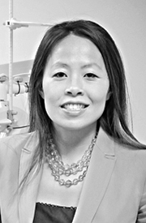

Our team is committed to providing thoughtful, personalized eye care for every patient.
Dr. Thanh Pham has been practicing optometry since 1999. She was raised in Puyallup, Washington. After graduating from Puyallup High School, she attended the University of Washington for her undergraduate studies and later earned her Doctor of Optometry from the University of California, Berkeley School of Optometry.
To further her optometric training, Dr. Pham completed clinical experiences in a variety of settings. She trained at the Bascom Palmer Eye Institute in Florida, the Missouri Eye Institute, and completed ocular disease externships at Martinez VA Hospital, Oakland VA Hospital, and Northern Navajo Medical Center in Shiprock, New Mexico.
Dr. Pham is certified by the National Board of Optometrists for the treatment and management of ocular disease. She is also certified by the Drug Enforcement Administration for controlled substances.
